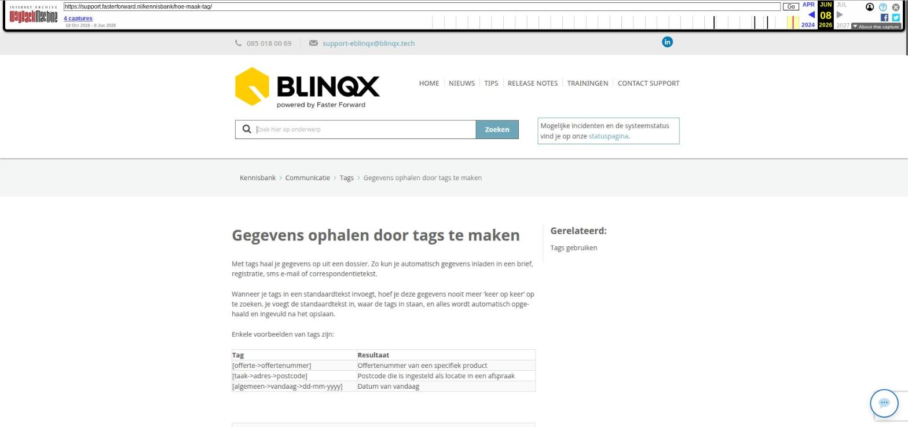

Gegevens ophalen door tags te maken

Tekstinhoud
Gegevens ophalen door tags te maken
Met tags haal je gegevens op uit een dossier. Zo kun je automatisch gegevens inladen in een brief, registratie, sms e-mail of correspondentietekst.
Wanneer je tags in een standaardtekst invoegt, hoef je deze gegevens nooit meer 'keer op keer' op te zoeken. Je voegt de standaardtekst in, waar de tags in staan, en alles wordt automatisch opgehaald en ingevuld na het opslaan.
Enkele voorbeelden van tags zijn:
Tag / Resultaat
[offerte->offertenummer] — Offertenummer van een specifiek product
[taak->adres->postcode] — Postcode die is ingesteld als locatie in een afspraak
[algemeen->vandaag->dd-mm-yyyy] — Datum van vandaag
Gericht informatie ophalen
Functies van tags
If-Functie
Else-Functie
Repeat-Functie
Algemene Functies
Specifieke Functies
Gericht informatie ophalen
Je kunt hiervoor bestaande tags gebruiken (lees hier hoe je tags gebruikt) en je kunt zelf tags maken met behulp van de bestaande tags. Door zelf tags te maken, kun je heel gericht de juiste informatie ophalen uit een dossier.
Hieronder lees je welke functies er zijn en wordt er aan de hand van voorbeelden uitgelegd hoe je zelf tags maakt.
Functies van tags
If-Functie
Een IF-functie legt een conditie op een bepaalde tag. Een voorbeeld is:
[if{offerte->aanvragers{1}->geslacht}==female]Mevrouw[/if]
Dit leest als: Als het geslacht van de eerste aanvrager 'vrouw' is, toon dan "Mevrouw". Een IF-functie heeft de opbouw: [if{TAG}==UITKOMST TAG]Te tonen tekst[/if]
TIP: == betekent "is gelijk aan" en != betekent "is niet gelijk aan"
Else-Functie
Een ELSE-functie zou er als volgt uit kunnen zien:
[if{offerte->aanvragers{1}->geslacht}==female]Mevrouw[else]De heer[/if]
Dit leest als: Als het geslacht van de eerste aanvrager 'vrouw' is, toon dan "Mevrouw" anders "De heer". Een ELSE-functie staat altijd in een IF-functie, dus tussen [if] en [/if].
Repeat-Functie
De repeat functie is gemaakt om herhalende gegevens op te halen en kent de volgende opbouw:
[repeat{locatie waar je gaat zoeken}][informatie die u op wilt halen][/repeat]
Dus je begint met:
[repeat{FUNCTIE}][/repeat]
Vervolgens geef je aan welke info je wilt ophalen. Bijvoorbeeld de achternaam van alle relaties uit een dossier. Die informatie zet je met een tag tussen de begin en sluit repeats in.
[repeat{}][dossier->persoonrelaties->achternaam][/repeat]
Vervolgens plaatst je tussen de accolades de locatie waar je deze info kunt vinden, in dit geval bij dossier->persoonrelaties:
[repeat{dossier->persoonrelaties}][dossier->persoonrelaties->achternaam][/repeat]
In dit geval krijg je alle achternamen van de personen uit het dossier te zien, bijvoorbeeld:
Jansen Schipper Boer
Ze staan dus aaneen gesloten. Door een spatie achter de tag [dossier->persoonrelaties->achternaam] te zetten, krijgt de opsomming ook een spatie.
[repeat{dossier->persoonrelaties}][dossier->persoonrelaties->achternaam] [/repeat] wordt:
Jansen Schipper Boer
Je kunt ook een 'Enter' plaatsen na de tag.
[repeat{dossier->persoonrelaties}][dossier->persoonrelaties->achternaam] [/repeat]
Dan is het resultaat:
Jansen
Schipper
Boer
Je kunt ook meerdere gegevens ophalen, zoals voorletters, tussenvoegsels en achternaam:
[repeat{dossier->persoonrelaties}][dossier->persoonrelaties->voornaam] [dossier->persoonrelaties->tussenvoegsel] [dossier->persoonrelaties->achternaam] [/repeat]
Dit geeft bijvoorbeeld als output:
Saskia Jansen (LET OP: er staan 2 spaties tussen voor en achternaam)
Bram Schipper (LET OP: er staan 2 spaties tussen voor en achternaam)
Frank de Boer
Om de extra spatie te voorkomen kan je een combinatie maken van een [repeat] en een [if]:
[repeat{dossier->persoonrelaties}][dossier->persoonrelaties->voornaam] [if{dossier->persoonrelaties->tussenvoegsel}!=][dossier->persoonrelaties->tussenvoegsel] [/if][dossier->persoonrelaties->achternaam] [/repeat]
Deze combinatie controleert meteen of het tussenvoegsel bestaat of niet. Als deze niet bestaat zal de extra spatie eruit worden gefilterd. Dit geeft dan als output:
Saskia Jansen
Bram Schipper
Frank de Boer
Algemene Functies
De algemene functies kunnen gebruikt worden in iedere tag (behalve waarvan de uitkomst een getal is). Deze algemene functies houden geen rekening met de waarde die in het veld staat. Voorbeeld van een dergelijke tag is:
[dossier->persoonrelaties->achternaam|allehoofdletter]
Alle letters worden dus als hoofdletters weergegeven, ongeacht hoe het staat ingevoerd. Hieronder volgt de beschrijving van een aantal functies.
|allehoofdletter
Deze tag zal alle letters in hoofdletters zetten
Voorbeeld: bergen op zoom zal worden: BERGEN OP ZOOM
|zegge
Deze tag zal de getallen voluit schrijven.
|woordhoofdletter
Deze tag zal de eerste letter van elk woord in deze tag als hoofdletter zetten
Voorbeeld: bergen op zoom zal worden: Bergen Op Zoom
|eerstehoofdletter
Deze tag zal de eerste letter als hoofdletter zetten
Voorbeeld: bergen op zoom zal worden: Bergen op zoom
|alleeneerstehoofdletter
Deze tag zal de eerste letter als hoofdletter en (in tegenstelling tot |eerstehoofdletter) de rest als kleine letters neerzetten.
Voorbeeld: BERGEN OP ZOOM zal worden: Bergen op zoom
|geenhoofdletters
Deze tag zal alle hoofdletters in kleine letters zetten
Voorbeeld: Bergen Op Zoom zal worden: bergen op zoom
|voorloopnul
Deze functie zal een 0 toevoegen aan een (onderdeel) van een datum of tijd.
Voorbeeld: 8-7-2012 zal worden 08-07-2012 als bijvoorbeeld de tags [algemeen->vandaag->dagnummer|voorloopnul] en [algemeen->vandaag->maandnummer|voorloopnul] worden gebruikt.
Voor tijd geldt hetzelfde: 9:5 is netter als dit wordt getoond als 09:05 en dit kan door bijvoorbeeld de tags [algemeen->vandaag->uur|voorloopnul]:[algemeen->vandaag->minuut|voorloopnul] worden gebruikt.
LET OP: deze functie houdt wel rekening met het aantal karakters van de tag. Een tijd als 14:54 zal dus worden getoond als 14:54, en niet als 014:054 als gebruik wordt gemaakt van de functie |voorloopnul
|maakvergelijkbaar
Deze functie zal van een getal met komma een punt maken zodat er een vergelijk gemaakt kan worden.
Voorbeeld: 1.500,00 zal met functie 1500.00 worden. [offerte->hoofdsom|maakvergelijkbaar]
Daarnaast zijn er ook tags beschikbaar om het getal positief of negatief te maken. Gebruik hiervoor: |maakpositief of |maaknegatief
|zonderspaties
Deze functie zorgt ervoor dat de spaties eruit gehaald worden. Deze kan bijvoorbeeld gebruikt worden in de header bij het telefoonnummer.
Specifieke Functies
|spatie
Deze is te gebruiken bij alle postcode tags en zal een spatie tussen de cijfers en letters zetten
Voorbeeld: 1232AA zal worden: 1232 AA
|hoofdletter
Deze tag is alleen te gebruiken bij de tussenvoegsel tag om bij de aanhef het tussenvoegsel met hoofdletter te zetten
Voorbeeld: Geachte heer de Krom zal worden: Geachte heer De Krom
|width:X
Om de breedte van een plaatje te forceren die een tag is opgeslagen (bijvoorbeeld een barcode), kan de breedte (width) worden ingesteld middels |width:X. Op de plaats van de X dient het aantal pixels gevuld te worden.
Voorbeeld: [dossier->barcode->document categorie barcode|width:150]
|height:X
Om de hoogte van een plaatje te forceren die een tag is opgeslagen (bijvoorbeeld een barcode), kan de hoogte (height) worden ingesteld middels |height:X. Op de plaats van de X dient het aantal pixels gevuld te worden.
[dossier->barcode->document categorie barcode|height:50]
|type:{ID}
Wanneer er een bepaalde document type barcode op bijvoorbeeld een brief geprint moet worden, zodat deze (bijvoorbeeld getekend) ingescand kan worden en direct op de goede plaats beland, moet het type van het document achter de tag worden geplakt. De ID's zijn op te halen via de module 'Document categorieën' onder 'Beheer'.
Voorbeeld: [dossier->barcode->document categorie barcode|type:100]
|gebruikinlink
Zo kan je bij een tag aangeven dat je deze specifiek gebruikt om een link te genereren.
algemeen->vandaag, algemeen->vandaag|eerstedag en algemeen->vandaag|eerstewerkdag
De tag algemeen->volgende maand zal als deze vandaag (op 1 januari 2025) wordt gebruikt de output geven 1 februari 2025. Wordt de tag op een dag gebruikt die in de volgende maand niet bestaat dan valt deze terug op de laatste wel bestaande dag. Wordt deze gebruikt op 29, 30 of 31 januari 2025 dan zal de output 28 februari 2025 zijn.
Deze tag heeft ook extra functies, namelijk |eerstedag en |eerstewerkdag zodat respectievelijk de eerste dag of eerste werkdag de output zal zijn. Ongeacht welke dag in de maand de tag gebruikt wordt zal de output altijd de eerste (werk)dag van de volgende maand zijn. Gebruik je de tag met de functie |eerstedag op 1, 14 of 31 januari 2025 dan krijg je als output altijd 1 februari 2025. Gebruik je op een willekeurig dag in januari de tag met de functie |eerstewerkdag dan krijg je altijd als output (maandag) 3 februari 2025. Let op, de functie |eerstewerkdag neemt de maandagen en zal geen rekening houden met feestdagen.
Laatste update: 15 oktober 2025
Was deze informatie nuttig?
Ja Nee